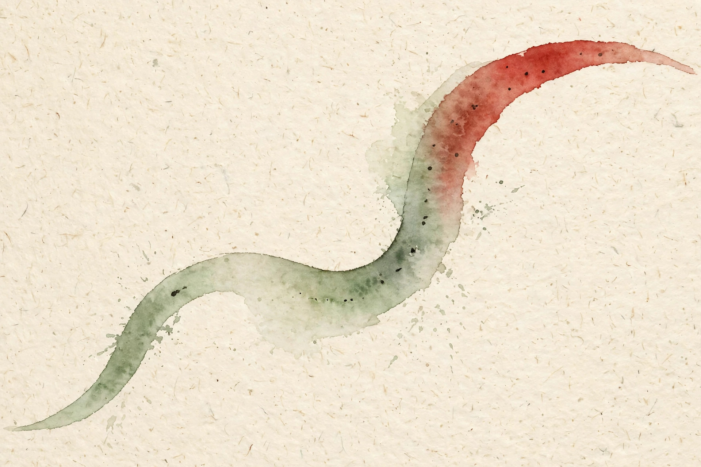

U01 · Preferences, choices, and generalization
Pairwise win records look like facts. This unit turns them into scores, then shows everything that distorts them: context, noise, thin data, and the choices of the person who built the model. Twelve concepts, one engine, and the discipline to read a score honestly.
Sourcing. No full transcript exists for session S02. This companion narrates content/v2/cs329h/lessons/u01_lesson.md. Concepts C01 through C09 map to S02 at title level. Concepts C10, C11, and C12 are requested extensions: the lesson marks them PLANNED / SOURCE ATTRIBUTION PENDING, and they are taught here as independent theory with that label.
How to read the tags. Every number carries its lesson section. Anything the companion computes is tagged Illustration. A Interpretation tag marks the companion's own reading of the lesson. Where the lesson leaves a value out, the page says so in words.
From the lesson A fact, number, or mechanism from the lesson.
Illustration Invented by the companion: an analogy, a toy with made-up values, or a what-if. Never lecture content.
Interpretation The companion's reading of why a lesson fact matters. The fact is the lesson's, the gloss is ours.
C01 · Contract 6 Points to the exact lesson section behind a claim or number.
Section 1 · C01, C02
From the lessonC01 · Contract 2
An annotator picks A in the morning and B in the evening. One person, two choices, one preference to infer. The lesson refuses the naive reading. A preference answers what someone would want with full information and no pressure. A choice answers what they picked, here, now. The choice equals the preference plus context plus noise.
From the lessonC01 · Contract 5, 6
The mechanism is explicit. The model writes the win probability as a logistic function of a latent score plus a context term: P(y=1) = sigma(s + b*c). When b = 0, choices reveal preference directly. When b differs from 0, raw win counts confound the two. On the lesson toy, 200 choices with A shown first and 200 with B shown first give observed fractions 0.69 and 0.54. The fit separates the parts: latent preference s = 0.80, context shift b = -0.66. Same numbers as the lesson figure u01_f01.
Interpretation This split is the unit's founding discipline. Every later concept is a refinement of it: a new term for context, a new model for noise, a new test for when the split itself fails. If you remember one sentence from this unit, remember that a win record is a mixture, not a readout.
From the lessonC01 · Contract 8, 11
The fit has two honesty checks. Fix b at 0 and the preference estimate must equal the log-odds of the pooled fraction. Shuffle the context labels and the b estimate must fall to 0. The failure case is sharp: with only one context observed, s and b collapse into a single number and any split between them is arbitrary. Two parameters need two contexts.
From the lessonC02 · Contract 5, 6
Context generalizes the idea. The lesson extends the score gap with a weighted context vector, so the model stays logistic in a wider feature space. The computed example is small and pointed: two summaries with score gap 0.3. The win probability is sigma(0.3) = 0.574. One recorded wording factor adds 0.5, the probability moves to sigma(0.8) = 0.690. A single recorded factor flips a close call.
From the lessonC02 · Contract 10, 11
There is a fork in the road. Model the context when you cannot control it, as with logs from production. Randomize it away when you design the annotation task: shuffle order, fix wording. The failure mode of modeling is unrecorded context that correlates with the items. If harder prompts always show A first, the order coefficient absorbs item difficulty and the model learns the wrong thing with full confidence.
Raw win counts are a mixture. Read them as preference plus context plus noise, and estimate the parts separately.
Section 2 · C03, C04
From the lessonC03 · Contract 4, 6
A pairwise record is one contest with one winner: the triple (a, b, y), where y = 1 means a won. The lesson toy has three records: A beats B twice, B beats A once, B beats C three times. The win-count matrix W holds W[A,B] = 2, W[B,A] = 1, W[B,C] = 3. The key result: the likelihood uses only these counts. The order of the records carries no information. Many contests rank the field the way many games rank teams.
From the lessonC03 · Contract 11
The independence assumption is the fragile part. Ten judgments of the same pair by the same annotator are not ten independent contests. Duplicates inflate confidence without adding information. The lesson's falsifiable check: compare within-annotator and between-annotator agreement rates. Equal rates support independence.
From the lessonC04 · Contract 3, 5
Then the unit draws its most useful distinction. Ordinal is the ranking. Cardinal is the ranking plus the gaps. Pairwise win records are ordinal. Scores with meaningful gaps are cardinal. From ordinal data alone, any monotone transform of the scores preserves every order. The logistic link picks one cardinal scale: gaps map to probabilities through sigma. Two pairs with the same order but gaps 0.8 and 3.0 give P = 0.69 and 0.95. Same numbers as the lesson figure u01_f07.
From the lessonC04 · Contract 9, 10
Cardinal claims cost more data. The standard error of a gap scales as 1 over the square root of the pair count, so halving the error needs four times the comparisons. The selection rule follows: choose scores when downstream use needs confidence, as with thresholds or active selection. Choose ranks when only the order matters and data is thin.
Ordinal data supports ordinal claims. Cardinal gaps are a model assumption wearing a number.
Section 3 · C05, C06, C07
From the lessonC05 · Contract 4, 5
Each item gets a hidden strength number. The chance A beats B depends only on the difference of strengths, pushed through an S-shaped curve: P(a beats b) = sigma(s_a - s_b). Big difference means near-certain win. Zero difference means a coin flip. The learning rule is the whole model in one line: each comparison nudges the winner's score up by (1 - p) and the loser's down by p, where p is the current predicted probability. Surprising wins move scores more than expected wins.
From the lessonC05 · Contract 6
The lesson fits the rule on a three-player toy: A beats B twice, B beats C three times, A beats C once. After fitting with a sum-zero anchor the scores are s = [2.72, 2.03, -4.76]. C never wins, so its score drops hard. The check closes the loop: P(A beats B) = sigma(0.69) = 0.666, matching A's 2-0 record against B. Lesson figure u01_f02 draws this fit as a number line plate.

From the lessonC06 · Contract 5, 6
The likelihood asks which score gap makes the observed wins most probable. For A beating B five times and losing once, the log-likelihood is 5 log sigma(d) + log(1 - sigma(d)). Differentiate, set to zero, and the maximizer falls out: sigma(d) = 5/6, so d = log 5 = 1.609. The general rule: for one pair, the MLE gap equals the log-odds of the observed win rate. A grid search agrees, marking the minimum of the negative log-likelihood at 1.61 with value 2.703.
From the lessonC06 · Contract 11, C07 · Contract 5, 6
Two sharp edges. First, six wins and zero losses: the MLE gap is infinite, the likelihood keeps rising as the gap grows, and any optimizer just stops somewhere arbitrary. The fix is a prior or regularization, deferred to U03. Second, the additive constant: sigma((s_a + c) - (s_b + c)) = sigma(s_a - s_b), so the likelihood is flat along the all-ones direction. The lesson shows s = [0.5, 0.0, -0.3] and s = [1.5, 1.0, 0.7] giving identical probabilities 0.622, 0.690, 0.574. Only gaps enter the model. The data sees differences. The absolute level is invisible.
From the lessonC07 · Contract 11
Partial identifiability is the nastier cousin. If items split into two groups with no cross-group comparisons, each group carries its own free constant, and the gap between the blocks is unidentified. The falsifiable check: report the number of connected components of the comparison graph as the number of free constants.
Surprising wins move scores most. The gradient is (y - p): a win the model already expected teaches almost nothing.
Only gaps are real. Anchor the scores, or they drift by a constant every run and nobody can compare results.
Illustration Fit Bradley-Terry scores yourself. Enter win counts for three items and press Fit. The code runs the lesson's gradient rule in your browser. The mechanism follows C05. The numbers you enter are yours.
Scores appear here.
From the lessonC05 · Contract 6 The defaults match the lesson toy. Expect scores near 2.72, 2.03, -4.76 with a sum-zero anchor. Try 6 wins and 0 losses for A over B and watch the gap refuse to settle: the separable-data divergence from C06.
Section 4 · C08, C09
From the lessonC08 · Contract 3, 5, 6
Label noise mixes the two outcomes toward 50/50. The model sees a weaker signal than the truth and estimates a smaller gap. Noise never creates preference. It only hides it. The mechanism is attenuation: with flip probability q, the observed log-odds shrink, and at q = 0.3 the lesson toy shows the estimated gap falling from 1.46 to 0.58. The full path: true gap 1.5, n = 2000, estimated gaps 1.46, 1.11, 0.93, 0.58 at q = 0.0, 0.1, 0.2, 0.3. Monotone shrinkage, seed 0.
From the lessonC08 · Contract 11, C09 · Contract 5, 6
Adversarial noise breaks even this: flips that target close pairs do not attenuate uniformly, and the ranking itself can invert. Then the unit turns to generalization. The model fits training comparisons well, but does it predict new ones? The MLE minimizes train loss by construction, so train loss is optimistic. Test loss is the unbiased estimate of the population risk. The lesson toy fits Bradley-Terry on few comparisons and tests on 5000 fresh ones from the same true gap of 1.0: test log-loss 0.627, 0.588, 0.582 at n = 20, 100, 1000, while train log-loss at n = 20 is 0.423. The optimism gap is 0.204 nats, and the curves meet near n = 1000.
From the lessonC09 · Contract 11
Distribution shift breaks the story. Test pairs from new items or new annotators need not follow the training distribution, and a model with great held-out loss on old annotators can fail on a new annotator pool. The falsifiable extension: if cross-pool loss exceeds within-pool loss by more than 0.05 nats, the pool shift matters.
Noise never creates preference. It only hides it, and the hiding is monotone in the noise rate.
Train loss measures fit to the past. Test loss measures skill on the future. With little data the two disagree, and the disagreement is the optimism you must price in.
Section 5 · C10, C11, C12
Interpretation The last three concepts are requested extensions. The lesson marks them PLANNED / SOURCE ATTRIBUTION PENDING, and this section teaches them as independent theory with that label, not as lecture content.
From the lessonC10 · Contract 5, 6
An annotation protocol is a contract with the annotator: what to judge, how to judge it, and how you verify the work. Three mechanisms control quality. Calibration examples anchor the scale. Gold questions with obvious answers estimate attention. Repeats estimate noise: re-ask 10 percent of pairs and measure self-consistency, which bounds the flip rate from C08. The lesson toy: 1000 pairs, 10 percent repeats, 5 percent gold. Annotator A shows gold accuracy 0.98 and self-consistency 0.93. Annotator B shows 0.80 and 0.70. Keep A, retrain or drop B. The cost of quality control is 15 percent extra judgments.
From the lessonC10 · Contract 11
Gold questions can leak. Annotators share the gold answers and game the metric. The signature: high gold accuracy with low self-consistency, which signals memorized golds rather than careful work.
From the lessonC11 · Contract 3, 5, 6
Choices carry social meaning. Politeness, effort, and what the annotator thinks you want to hear all shape the recorded choice. The lesson's inversion example: under time pressure, longer answers win 65 percent of judgments because they look more thorough. Under careful judgment, shorter answers win 60 percent. A model trained on the pressured data learns that longer is better, inverting the careful preference. The careful judgment may itself be artificial, which is the honest counterpoint: nobody reads that carefully in real use, so optimizing for it can hurt the actual experience.
From the lessonC12 · Contract 5, 6
Fairness asks three questions with teeth: whose judgments trained the model, does accuracy or calibration differ by group, and whose preference should the deployed system reflect. The lesson figure u01_f08 shows the second question numerically: pooled accuracy 0.73 hides 0.87 on group 1 and 0.59 on group 2, n = 600 per group. The gap is 0.28, far above noise with standard error about 0.02. The falsifiable follow-up: fit per-group scores. If the score vectors agree up to noise, the gap is noise, not disagreement, and the repair differs.
Fix the data before the model. Calibration examples, gold questions, and repeats are cheaper than any algorithmic repair.
A pooled model serves the majority pattern. Report per-group performance, or the headline number is a choice to hide the gap.
Wisdom index